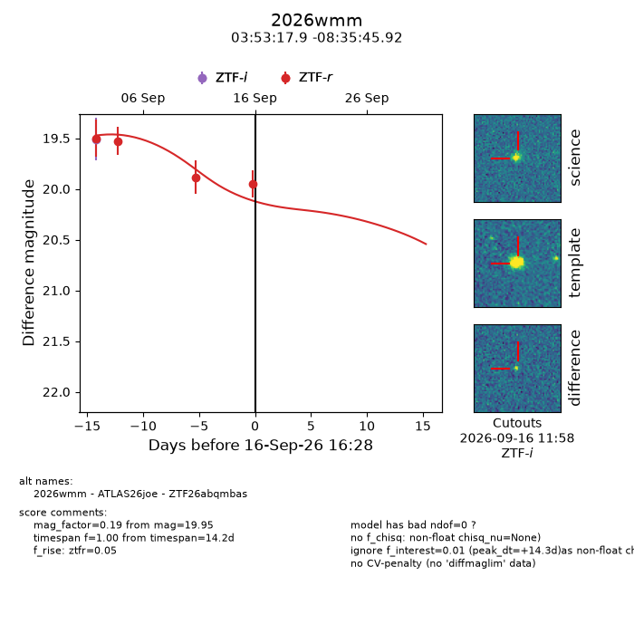
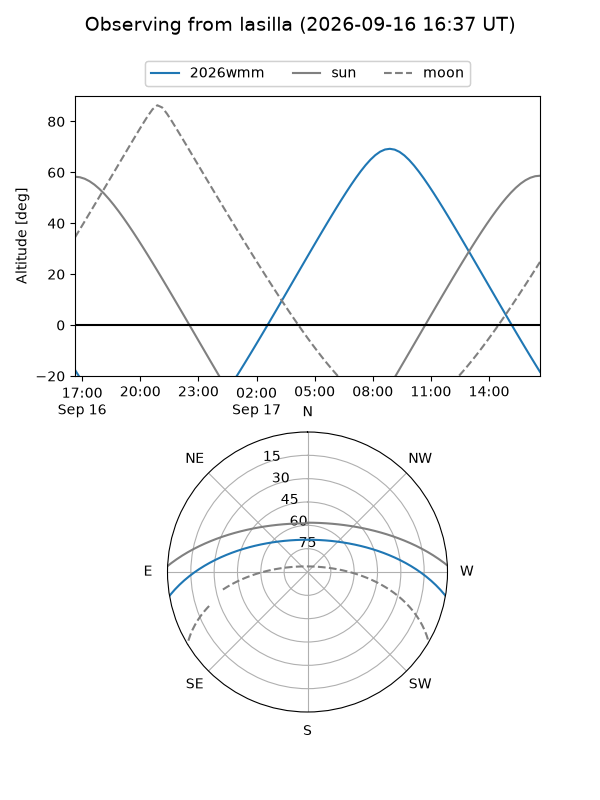
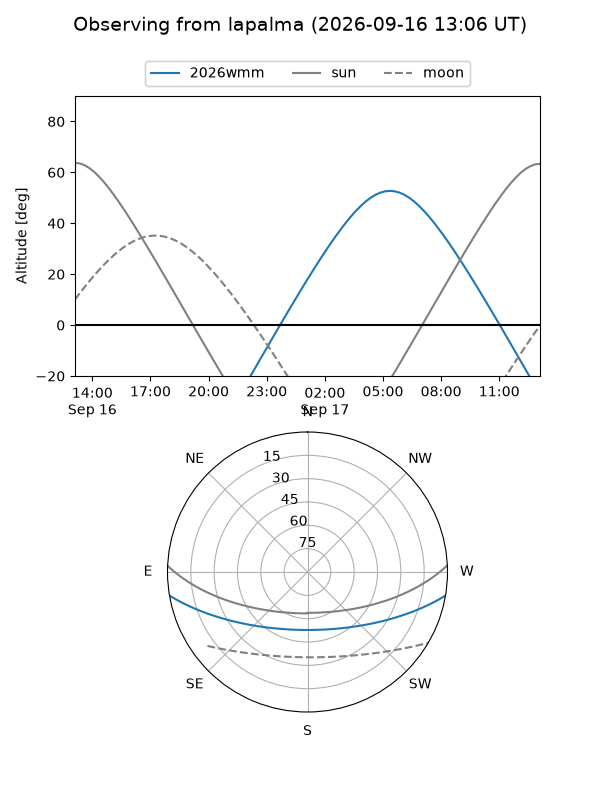
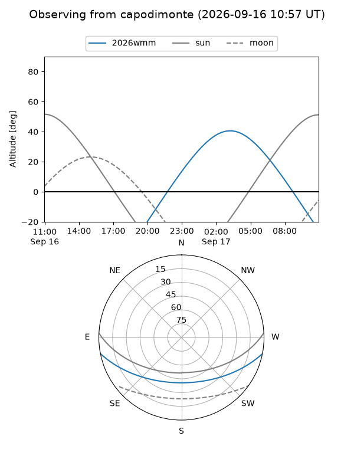
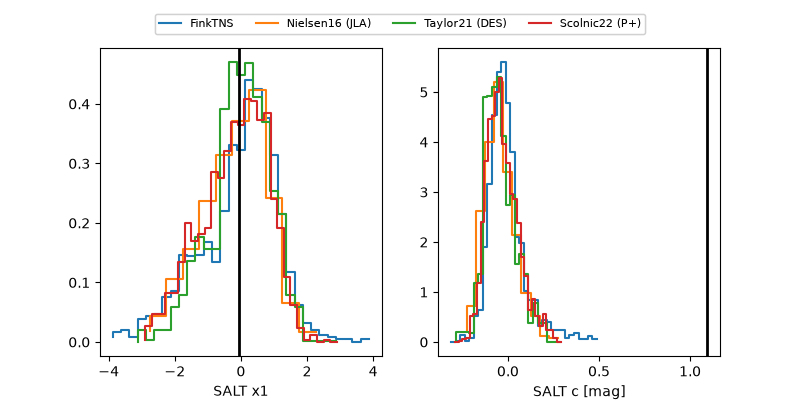

2026wmm
Target 2026wmm at 2026-09-16 16:30
Aliases and brokers:
FINK-ZTF: ztf.fink-portal.org/ZTF26abqmbas
Lasair-ZTF: lasair-ztf.lsst.ac.uk/objects/ZTF26abqmbas
ALeRCE-ZTF: alerce.online/object/ZTF26abqmbas
YSE-PZ: ziggy.ucolick.org/yse/transient_detail/2026wmm
TNS name: wis-tns.org/object/2026wmm
Direct TNS query: direct search
alt names
ZTF26abqmbas (ztf,fink_ztf)
2026wmm (tns,yse)
ATLAS26joe (atlas)
Coordinates:
equatorial (ra, dec) = 58.3245,-8.59609
equatorial (HMS+DMS) = 03:53:17.89,-08:35:45.92
galactic (l, b) = (198.3629,-43.26165)
Flags:
TNS type: nan
peak dt: +14.3
Photometry:
last ztfr=19.95
4 ztfr detections
Lightcurve

Visibility



Additional plots
